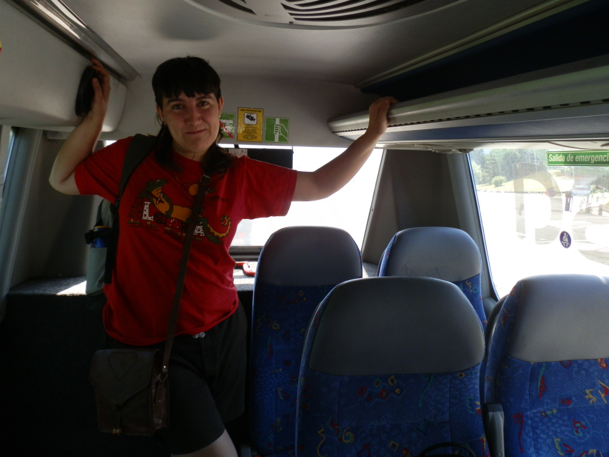

El concepto de habitabilidad queer remite a las formas en que los cuerpos se vinculan con los objetos y espacios que los rodean. Desde una lectura fenomenológica, “la orientación sexual implica una orientación hacia ciertos objetos, una dirección hacia aquello que es considerado legítimo, deseable, correcto” (Ahmed, 2006, p. 31). Por lo tanto, esta orientación no solo modela nuestras formas de deseo, sino también nuestras formas de habitar. La resignificación, reapropiación y desorientación que nos proporcionan los objetos queer no sólo transforman su función, sino que participan en los modos de vida de los cuerpos que los habitan. Es así como esta perspectiva invita a pensar que la habitabilidad queer hace que el tránsito identitario que se construye es acompañado, pues torcer tus manos es también torcer lo que sujetan.
En este sentido es una curvatura del tiempo y de la memoria, un modo de habitar desde la desviación, desde la necesidad de decir: esto también importa. De esta manera, un archivo queer no se construye únicamente para recordar, sino para insistir y alterar la linealidad de los discursos, para torcer las categorías de lo visible, de lo transmisible.
En esta investigación, el archivo no se presenta como un sistema fijo o una colección cerrada, sino como un ecosistema poroso, donde se filtran el cuerpo, el texto, el objeto y el espacio.
